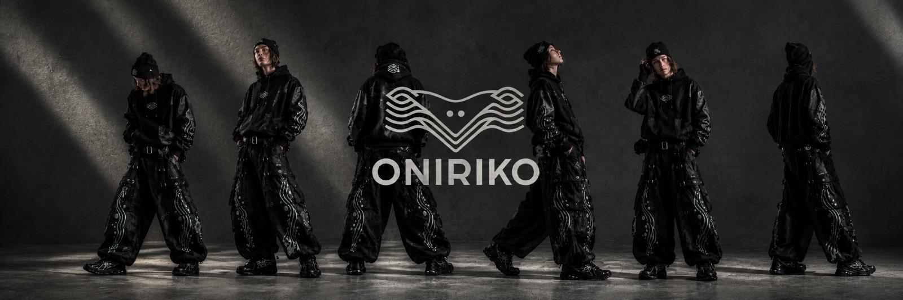

Rehacer
Desarmar, cortar, unir e intervenir en lugar de empezar desde cero.
 ONIRIKO.
ONIRIKO.
Ropa urbana reconstruida a partir de lo que ya existe. Intervenimos prendas, mezclamos materiales y reinterpretamos referencias de nuestra cultura desde una mirada contemporánea.

Cada prenda tiene una historia. Nosotros la transformamos. Retazos, costuras, manchas, cortes y materiales que vuelven a tener otra vida.

ONIRIKO nace de una idea sencilla: una prenda no tiene por qué terminar cuando cambia de dueño, se rompe o deja de representar quién eres.
Tomamos ropa existente y la convertimos en piezas urbanas alternativas. En el proceso aparecen costuras visibles, mezclas inesperadas, retazos y referencias gráficas inspiradas en geometrías, símbolos y memorias culturales colombianas.
Desarmar, cortar, unir e intervenir en lugar de empezar desde cero.
Referencias culturales llevadas a un lenguaje gráfico contemporáneo.
Cada pieza conserva rastros de lo que fue y construye una nueva historia.
